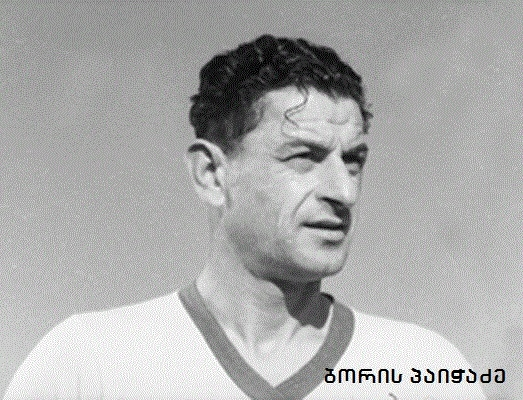

თბილისის "დინამოს" ისტორია 1925 წლის შემოდგომიდან იღებს სათავეს-სპორტსაზოგადოება "დინამოს" ხელმძღვანელებმა საფეხბურთო გუნდი ჩამოყალიბეს. თბილისის "დინამომ" პირველი შეხვედრა 1926 წლის 6 იანვარს ბაქოელ თანაკლუბელებთან ჩაატარეს. შედარებით გამოცდილმა მეტოქემ მინიმალური ანგარიშით 1:0 მოიგო. "დინამოს" შემადგენლობა ასეთი გახლდათ: დ. ცომაია, ა. ფოჩხუა, მ. ბლანკმანი, ი. ფიოდოროვი, ნ. ანიკინი, ა. გონელი, ა. პივოვაროვი, ო. გოლდობინი, ა. გალპერინი, ს. მასლენნიკოვი და ვ. ცომაია. 3 დღის შემდეგ "დინამომ" ბაქოს მეორე კლუბს "პროგრესს" უმასპინძლა და ამჯერად იოლად სძლია მეტოქეს - 3:0. მიუხედავად იმისა, რომ 30-ინი წლების შუაწელში ქართველი ფეხბურთელების სიძლიერე აშკარაა ("დინამო" თბილისში 9:5 ამარცხებს რუსული საკლუბო ფეხბურთის ფლაგმანს მოსკოვის "დინამოს", ლენინგრადის "დინამოს" კი 3:2-ს უგებს), საბჭოთა კავშირის ფეხბურთის ფედერაციამ 1936 წელს დინამოელებს ქვეყნის პირველ ჩემპიონატში უმაღლესი ლიგის ნაცვლად პირველ ლიგაში მიუჩინა ადგილი. საბჭოთა ფეხბურთის მმართველი ორგანოს შეცდომა მალე "დინამომ" თავად გამოასწორა - ექვსი მეტოქიდან ხუთი დაამარცხა (დნეპროპეტროვსკის "დინამო" 5:0, მოსკოვის "ტორპედო" 2:1, მოსკოვის "მეტალურგი" 2:0, ლენინგრადის "სტალინეცი" 3:1, ლენინგრადის "სპარტაკი" 6:1), ერთთან ფრედ ითამაშა (მოსკოვის "სტალინეცი" - 1:1) და უმაღლესი ლიგის საგზურს დაეუფლა! ამ შეხვედრაში დინამოელთა ღირსება ალექსანდრე დოროხოვმა, შოთა შავგულიძემ, ედუარდ ნიკოლაიშვილმა, გრიგოლ გაგუამ, ვლადიმერ ბერძენიშვილმა, ნიკოლოზ ანიკინმა, ილია პანინმა, მიხეილ ბერძენიშვილმა, ბორის პაიჭაძემ, მიხეილ ასლამაზოვმა, ნიკოლოზ სომოვმა და ალექსანდრე აბაშიძემ დაიცვეს.
1936 წლის შემოდგომით თბილისელები საბჭოთა კავშირის რიგით მეორე, ”დინამოსთვის” კი პირველ ჩემპიონატში ჩაებნენ. თბილისის ”დინამომ” საბჭოთა კავშირის ჩემპიონატებში ასპარეზობის მანძილზე საერთო ჯამში 1424 შეხვედრა ჩაატარა. ამ 1424 თამაშიდან ”დინამომ” პირველი მატჩი 1936 წლის 7 სექტემბერს კიევის ”დინამოსთან” ჩაატარა . ქართველ და უკრაინელ ფეხბურთელთა დაპირისპირება საყაიმო ანგარიშით - ფრედ 2:2 დასრულდა. თბილისელთაგან გოლები ნიკოლოზ სომოვმა და ბორის პაიჭაძემ გაიტანეს, გუნდის შემადგენლობა კი ასეთი გახლდათ: ალექსანდრე დოროხოვი, შოთა შავგულიძე (ედუარდ ნიკოლაიშვილი), ბუკა ბერძენიშვილი, ნიკოლოზ ანიკინი, ვლადიმერ ჯორბენაძე, გრიგოლ გაგუა, ილია პანინი, მიხეილ ბერძენიშვილი, ბორის პაიჭაძე, მიხეილ ასლამაზოვი, ნიკოლოზ სომოვი. პირველი გამარჯვება ”დინამომ” თვრამეტი დღის შემდეგ, 25 სექტემბერს, მეორე ტურში, თბილისში, მოსკოვის ”სპარტაკთან” მოიპოვა. მიხეილ ბერძენიშვილის ერთადრეთმა გოლმა თამაშის ბედი ”დინამოს” სასარგებლოდ გადაწყვიტა. სადებიუტო სეზონში ”დინამომ” საბოლოოდ მესამე საპრიზო ადგილი დაიკავა - ლენინგრადის ”კრასნაია ”ზარიასთან” 2:3 მარცხმა თბილისელებს ჩემპიონის ტიტულის მოპოვების შანსი მოუსპო. იმავე 1936 წელს ”დინამომ” ერთი ისეთი შეხვედრა ჩაატარა, რომელსაც დღემდე იხსენებენ საფეხბურთო ისტორიკოსები - საბჭოთა კავშირის თასის გათამაშების მეოთხედფინალში ქართველმა ფეხბურთელებმა მოსკოვში ადგილობრივ ”სპარტაკს” 6:3 (!) მოუგეს. ამ გუნდების პირველი დაპირისპირება, რომელიც 16 აგვისტოს გაიმართა, ფრედ 3:3 დასრულდა. გამარჯვებულის გასარკვევად 4 დღის შემდეგ, მეტოქენი მეორედ წარსდგნენ ერთმანეთის პირისპირ. კვლავ 3:3. დამატებით დროში კი თბილისელებს სამი უპასუხო ბურთი გააქვთ და საბოლოოდ 6:3! 1936 წელს ”დინამო” თასის გათამაშების ფინალში გადის, მაგრამ გადამწყვეტ შეხვედრაში მოსკოვის ”ლოკომოტივთან” 0:2 მარცხდება. 30-იანი წლების მეორე ნახევარში თბილისის ”დინამო” საბჭოთა კავშირის ერთ-ერთი უძლიერესი კლუბია, გუნდი ორჯერ ხდება ქვეყნის ვიცე-ჩემპიონი, ერთხელ ბრინჯაოს მედალს ეუფლება, ორჯერ თასის ფინალში გადის... 1937 წელს თბილისის ”დინამომ” ისტორიაში პირველი საერთაშორისო მატჩი ჩაატარა - საბჭოეთს ბასკ ფეხბურთელთა ნაკრები ესტუმრა. ”დინამო” ესპანელ მოთამაშეებს თბილისში 24 ივლისს დაუხვდა. მიუხედავად იმისა, რომ გამარჯვების წყურვილი საოცრად დიდი იყო, იმ დროისათვის უფრო თანამედროვე ფეხბურთის მიმდევარმა ბასკებმა 2:0 გაიმარჯვეს. 1941 წელს მეორე მსოფლიო ომის დაწყებამ, ცხადია საკავშირო ჩემპიონატებზეც იმოქმედა - 1941 წლის ჩემპიონატი შუაში შეწყდა, არადა იმ წელს ”დინამო” შესანიშნავად ასპარეზობდა. საბჭოთა კავშირის ჩემპიონატების განახლებამდე, 1944 წელს თბილისის ”დინამო” პირველ საზღვარგარეთულ ტურნეში გაემგზავრა - ქართველ ფეხბურთელებს ირანმა უმასპინძლა. 1944 წლის ოქტომბერში თბილისის ”დინამომ” ირანის დედაქალაქ თეირანში ორი შეხვედრა ჩაატარა - 20 ოქტომბერს ირანის ნაკრები დაამარცხა 5:1, ერთ კვირაში კი თეირანის ნაკრებსაც სძლია - 4:0.
